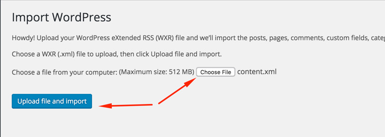
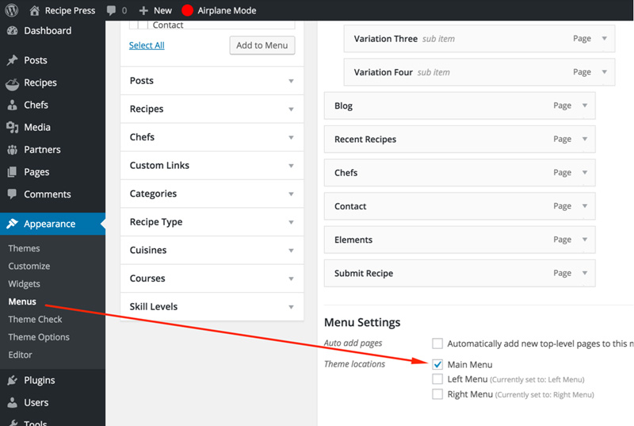

Import Demo Contents
Setting up permalinks
It is better to set your permalinks to postname before start import process. Go to Settings > Permalinks and choose Post name from Common Settings and save the changes, As displayed in the screenshot given below.

To set your site similar to our live demo you can follow one of these choices.
1 - One Click Demo Import ( Automatic & Recommended ) 2 - Import XML Contents and Configure the Theme Manually
One Click Demo Import
( Automatic & Recommended )
Note: You must have installed 'Inspiry One Click Demo' Plugin installed for this operation. It is listed in recommended plugins. You can deactivate and delete that plugin after the process is done.
Go to WordPress Dashboard > Appearance > Demo Importer.
Click the Import Demo Data button and Wait for few minutes as the demo images are being fetched from remote server and this process can take few minutes.
Once the import process is complete, You will see a screen like the one below. Visit your site and you will find your site working like the theme demo.
Note: The number of imported posts, pages, recipes and other stuff is smaller than real demo to make the import process reasonably fast. Otherwise it can be a problem for most users to import demo data.
Manual Import
(Import XML Contents and Configure the Theme Manually)
Step 1
Go to WordPress Admin > Tools > Import and click WordPress as displayed in image below.
At 1st time you need to install WordPress importer plugin
Once installed you need to activate the plugin and run the importer.
Step 2
Look for Import XML folder in unzipped package downloaded from themeforest. Select content.xml from Import Data folder to import demo contents.

After importing file, Assign posts to an existing author. Mark the checkbox to download and import file attachments and Click 'Submit' button.
Import process can take few minutes. So wait for it and try to keep the focus on current tab in your browser.
After that is done, you will have bunch of posts, pages and other contents imported into your WordPress installation.
Step 3
Navigate to Appearance > Menus and use the Already Imported Menus from XML and assign those to related menu locations. There are three menu locations available in this theme according to header needs. "Main Menu", "Left Menu" and "Right Menu". You have to assign all three imported menus to related locations. After that save the menu. As pointed in the screenshot given below.

Step 4
To configure reading settings you need to visit WordPress Admin > Settings > Reading and choose that front page displays as static page. Then select Home as Front Page and Blog as Posts Page. As, displayed in the screenshot given below.

Next Step is to Configure Permalink Settings
Step 5
To configure permalinks settings visit WordPress Admin > Settings > Permalinks and change it as displayed in the screenshot given below.
Now, All the remaining settings are mostly in theme options and plugin options. You can import theme options using theme-options.txt and widgets using widgets.wie with Widget Importer & Exporter Plugin.